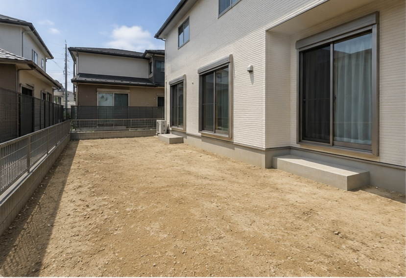

お庭の写真
スマホで撮った庭写真を使います。
Garden Living
自宅の庭写真で、完成後のイメージを確認できます。ピザ窯・人工芝・タイルデッキなど、庭で過ごす時間を見ながら選べます。
Design Simulation
気になる商品を選んで、庭の完成イメージを作れます。
スマホで撮った庭写真を使います。

商品を置いた後の雰囲気を確認できます。
※生成画像は参考イメージです。正式なご提案・お見積りは現地確認後となります。
Showroom 01
標準的な建売住宅の裏庭を使った、Garden Living展示場1号です。初期状態は外構前の土の庭から始まります。

※設置費・基礎工事・運搬費等は含まれておりません。現地条件により価格は変動します。
Category
庭まわりの商品を、用途ごとに整理しました。
Scene
商品単体ではなく、庭で過ごす時間からカテゴリを選べます。

庭で家族や友人と食事する時間を、もっと気軽に楽しく。

門柱や外構のアクセントに、石と金属の質感を取り入れる。
犬や家族が安心して過ごせる、やわらかく手入れしやすい庭へ。

視線を整えながら、庭に抜け感と外観のまとまりをつくる。
子どもや犬が過ごしやすい、手入れしやすい庭の足元へ。
庭作業、ペット、アウトドア後の片付けまで快適に。
Design Simulation Beta
お庭の写真をもとに、ピザ窯・タイルデッキ・人工芝などを配置した完成イメージを作成できます。
選んだ内容は相談文としてコピーでき、LINE相談時のイメージ共有にも使えます。
本機能は一般のお客様向けの簡易シミュレーションです。同業者・営業目的での無断利用はご遠慮ください。
開発確認用: ネスカFワイド 1商品・1仕様だけをDBから読み込んでいます。
Reference Price
※Garden Living商品は商品代の参考価格です。施工商品は標準施工費込みの参考価格です。特殊施工・現場条件により価格は変動します。
相談内容をコピーして、LINEで貼り付けて送ってください。
Simulation Memo
Generated Image
完成イメージを作成中です…
生成に失敗しました。
Products
カテゴリを選ぶか、検索してから商品一覧を表示します。
Contact
受注発注が基本です。購入前にサイズ、色、施工方法、他店価格との比較まで一緒に確認できます。